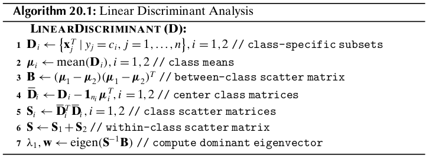

Chapter 20 Linear Discriminant Analysis¶
Given labeled data consisting of \(d\)-dimensional points \(\x_i\) along with their classes \(y_i\), the goal of linear discriminant analysis (LDA) is to find a vector \(\w\) that maximizes the separation between the classes after projection onto \(\w\).
20.1 Optimal Linear Discriminant¶
Let us assume that the dataset \(\D\) consists of \(n\) points \(\x_i\in\R^d\), with the corresponding class label \(y_i\in\{c_1,c_2,\cds,c_k\}\). Let \(\D_i\) denote the subset of points labeled with class \(c_i\), i.e., \(\D_i=\{\x_j^T|y_j=c_i\}\), and let \(|\D_i|=n_i\) denote the number of points with class \(c_i\). We assume that there are only \(k=2\) classes. Thus, the dataset \(\D\) can be partitioned into \(\D_1\) and \(\D_2\).
Let \(\w\) be a unit vector, that is, \(\w^T\w=1\). The projection of any \(d\)-dimensional point \(\x_i\) onto the vector \(\w\) is given as
where \(a_i\) is the offset or scalar projection of \(\x_i\) on the line \(\w\):
We also call \(a_i\) a projected point. Thus the set of \(n\) projected points \(\{a_1,a_2,\cds,a_n\}\) represents a mapping from \(\R^d\) to \(\R\), that is, from the original \(d\)-dimensional space to a 1-dimensional space of offsets along \(\w\).
Each projected point \(a_i\) has associated with it the original class label \(y_i\), and thus we can compute, for each of the two classes, the mean of the projected points ,called the projected mean, as follows:
where \(\mmu_1\) is the mean of all point in \(\D_1\). Likewise, we can obtain
To maximize the separation between the classes, it seems reasonable to maximize the difference between the projected means, \(|m_1-m_2|\). For good separation, the variance of the projected points for each class should also not be too large. LDA maximizes the separation by ensuring that the scatter \(s_i^2\) for the projected points within each class is small
We can incorporate the two LDA criteria, namely, maximizing the distance between projected means and minimizing the sum of projected scatter, into a single maximization criterion called the Fisher LDA objective:
Note
\(\dp\max_\w J(\w)\frac{(m_1-m_2)^2}{s_1^2+s_2^2}\)
The vector \(\w\) is also called the optimal linear discriminant (LD).
We can rewrite \((m_1-m_2)^2\) as follows:
where \(\B=(\mmu_1-\mmu_2)(\mmu_1-\mmu_2)^T\) is a \(d\times d\) rank-one matrix called the between-class scatter matrix.
As for the projected scatter for class \(c_1\), we can compute it as follows:
where \(\S_1\) is the scatter matrix for \(\D_1\). Likewise, we can obtain
Notice again that the scatter matrix is essentially the same as the covariance matrix, but instead of recording the average deviation from the mean, it records the total deviation, that is,
where \(\S=\S_1+\S_2\) denote the within-class scatter matrix for the pooled data.
Note
\(\dp\max_\w J(\w)=\frac{\w^T\B\w}{\w^T\S\w}\)
where \(\ld=J(\w)\). If \(\S\) is nonsingular, that is, if \(\S\im\) exists
Note
\((\S\im\B)\w=\ld\w\)
Thus, if \(\S\im\) exists, then \(\ld=J(\w)\) is an eigenvalue, and \(\w\) is an eigenvector of the matrix \(\S\im\B\). To maximize \(J(\w)\) we look for the largest eigenvalue \(\ld\), and the coresponding dominant eigenvector \(\w\) specifies the best linear discriminant vector.
The total time complexity is \(O(d^3+nd^2)\).
For the two class scenario, if \(\S\) is nonsingular, we can directly solve for \(\w\) without computing the eigenvalues and eigenvectors.
where \(n=(\mmu_1-\mmu_2)^T\w\) is just a scalar multiplier.
Because \(\frac{b}{\ld}\) is just a scalar, we can solve for the best linear discriminant as
Note
\(\w=\S\im(\mmu_1-\mmu_2)\)
20.2 Kernel Discriminant Analysis¶
The goal of kernel LDA is to find the direction vector \(\w\) in feature space that maximizes
Optimal LD: Linear Combination of Feature Points
The mean for class \(c_i\) in feature space is given as
and the covariance matrix for class \(c_i\) in feature space is
The between-class and within-class scatter matrices are defined as
Note
\((\S_\phi\im\B_\phi)\w=\ld\w\)
where we assume that \(\S_\phi\) is non-singular. Let \(\delta_i\) denote the \(i\)th eigenvalue and \(\u_i\) the \(i\)th eigenvector of \(\S_\phi\), for \(i=1,\cds,d\). The eigen-decomposition of \(\S_\phi\) yields \(\S_\phi=\U\Delta\U^T\), with the inverse of \(\S_\phi\) given as \(\S_\phi\im=\U\Delta\im\U^T\). Here \(\U\) is the matrix whose columns are the eigenvectors of \(\S_\phi\) and \(\Delta\) is the diagonal matrix of eigenvalues of \(\S_\phi\). The inverse \(\S_\phi\im\) can thus be expressed as the spectral sum
where \(b_r=\frac{1}{\delta_r}(\u_r^T\d_\phi)(\d_\phi^T\w)\) is a scalar value.
where \(a_j=\sum_{r=1}^db_rc_{rj}/\ld\) is a scalar value for the feature point \(\phi(\x_j)\). Therefore, the direction vector \(\w\) can be expressed as a linear combination of the points in feature space.
LDA Objective via Kernel Matrix
where \(\a=(a_1,a_2,\cds,a_m)^T\) is the weight vector, and
In a similar manner we get \(s_2^2=\a^T\N_2\a\).
Note
\(\dp\max_\w J(\w)=\max_\a J(\a)=\frac{\a^T\M\a}{\a^\N\a}\)
The weight vector \(\a\) is the eigenvector corresponding to the largest eigenvalue of the generalized eigenvalue problem:
If \(\N\) is nonsingular, \(\a\) is the dominant eigenvetor corresponding to the largest eigenvalue for the system
As in the case of linear discriminant analysis, when there are only two classes we do not have to solve for the eigenvector because \(\a\) can be obtained directly:
we can ensure that \(\w\) is a unit vector if we scale \(\a\) by \(\frac{1}{\sqrt{\a^T\K\a}}\)
Note
\(\dp\w^T\phi(\x)=\sum_{j=1}^na_j\phi(\x_j)^T\phi(\x)=\sum_{j=1}^na_jK(\x_j,\x)\)
The complexity of kernel discriminant analysis is \(O(n^3\).